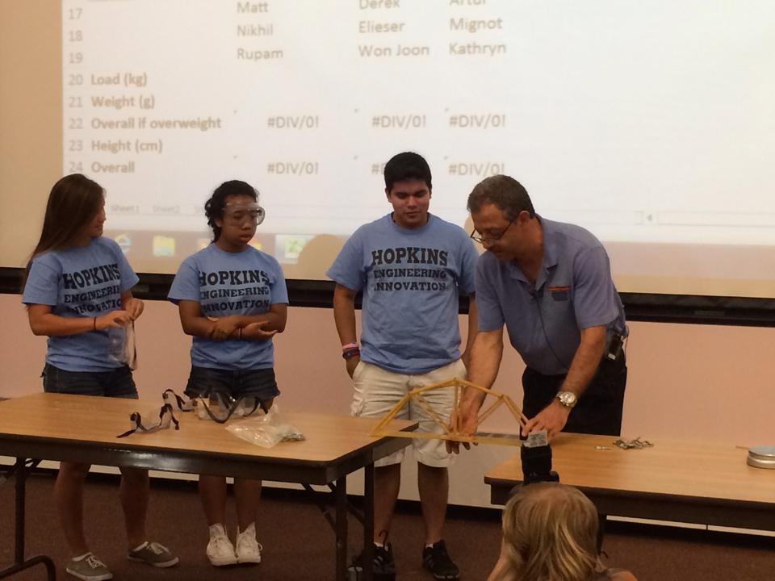
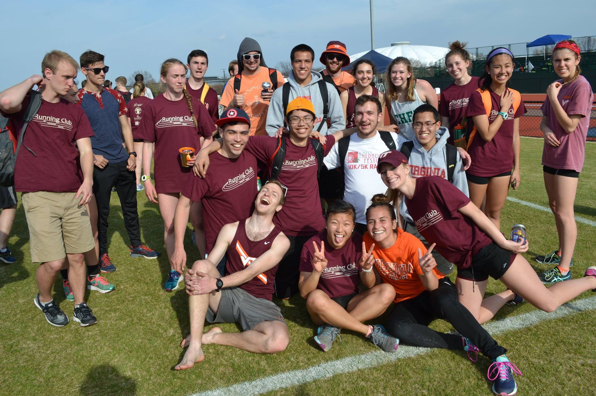
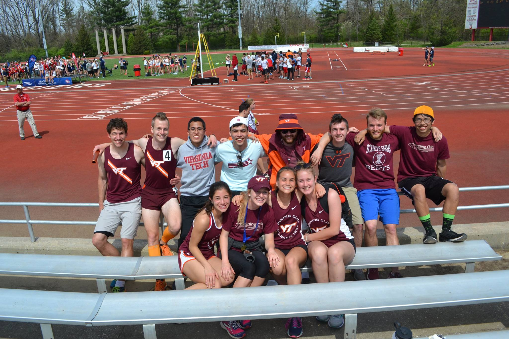
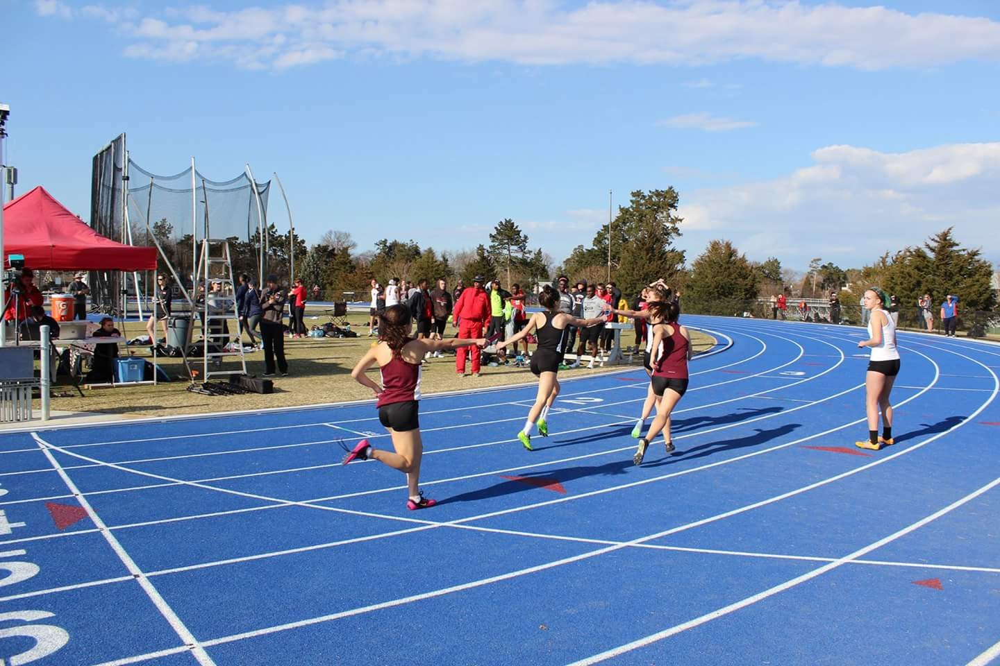

Rachel Kitchen
Being a leader means different things to different people. An easy image that pops to mind when you hear the word "leader" is the image of a president, an army general, a company executive. In history classes, we recognize and remember the leaders - the others fall aside and are forgotten. These leaders are the people who inspired something to change from what it was before. In a sense, leaders are the people who write history - without someone leading a new path, there will be no changes.
But not everyone is going to be changing the history books. There are always leaders, but not everyone gets the recognition of "changing the world". Does that mean leaders are unnecessary? Does that mean those leaders are less important? Not at all. These leaders are the people who inspire us every day, they are the ones who strive to help the world, even if it's only going to be in one person's life.
That is the type of leader I aspire to be. I don't need to change the world. I just want to make a difference, to create opportunities, and to give help to those who may not even be able to ask for it.
For these reasons, I try to place myself into diverse situations, so I can meet people from all different parts of life. I meet people from my major, Computer Science, but try to put myself into many other places - whether it's Spanish class, the running club, or working at a dining center. I believe the best leaders are the people who understand the people they are leading. I believe that the mutual understanding is the basis of all good leadership, otherwise a leader will seem disconnected and difficult to trust.
Some of the most important leaders I've had in my life are my teachers. My teachers have come in different forms, whether it is a school teacher or a random student from my math class. A good teacher opens their students' eyes: at every point in our life, especially as kids but even still as adults, we don't have the opportunity to see or experience everything the world has to offer. A teacher provides that window, however small, to the world that we don't know.
Someday, I want to be a teacher. I want to be that person who builds that window. The opportunities are so numerous, so broad, it's hard to see where I should even begin. Should I focus on empowering young girls to join tech-related professions? Should I reach out to low-income areas who may not have access to the resources that I have been so lucky to have? Should I extend my dreams outwards into the world, reaching the "far-away" places abroad? There are so, so many options, but the more I've thought about it, the more I've realized - the most important thing is to
Virginia Tech has become that starting point for me. I joined the Association for Women in Computing (AWC) which has outreach for empowering girls and minority groups in computing-related professions. I've drafted a curriculum for Bridge Scholars of Chattanooga, a 5-week summer program for low-income middle schoolers in Chattanooga, TN. I'm taking Spanish as my first step into a global world - a world where I will be able to reach others with my words and actions.
I do consider myself a self-motivated person, but I know that I don't have everything. I can dream for the world, but in the end, I have limitations. I can't always put myself out on the line for risk. I believe, more than anything else, that a scholarship will enable me to push myself beyond the simple boundary that I've put up for myself.
At Virginia Tech, I've found my beginning. But I have no intention to let everything end once my time here is up. I'm going to continue pushing hard until I feel that I have made my mark on the world - no matter how small and insignificant it may be in the history books.
Digital Story
What is Ut Prosim to me? Ut Prosim means helping my community. Ut Prosim means helping my friends. Ut Prosim means helping my family. Ut Prosim means helping myself. Virginia Tech enables me to become everything that I need to embrace Ut Prosim and follow it for the rest of my life.
- B.S. Computer Science
- Minors: Math, Spanish
- GPA: 3.93
Expected Graduation Date: May 2020
Machine Learning Visualization and Transfer Learning for RF Sensing
Fall Semester 2017, Virginia Tech Hume Center
Create a neural neural network that can classify RF Bluetooth signals and use visualization to gain insight into the network's decision-making process.

Summer 2017, Largo, FL
Developed secure cloud communications using virtualization through Docker and VMWare. Created and executed tests against security requirements.
July 2014
4-week summer program covering a range engineering disciplines, such as electrical, chemical, and structural engineering.
Group projects covered circuits, physics, and product design.
Final project of creating a bridge out of pasta.
June 2013
3-week summer program
Video Game Design Course:
Working as a freelance videographer to create motion graphics videos for advertisement and promotion.
Example promotional video:
Member of Troop 6019 from 2006-2015
Serving the community through outreach projects.
Service project dedicated to reconstructing homes for low-income families in the Applachian area.
School club for raising money to build water wells in Africa.
A game created using Unity Game Engine to be used with Google Cardboard VR.
Language: C#
The game is a highscore-based game using first person shooter mechanics.
Game Demo: (two separate views are for creating the VR effect when used with the Cardboard VR Viewer)
Student organization dedicated to creating a community for computer science students by connecting students to tech companies, holding workshops on diverse topics, and giving students the opportunity to particpate in hackathons.
Design Committee: Design posters, advertisements, and club designs.


Student organization dedicated to empowering women and minority groups in computing-related professions.
SEC Representative: representing the club to the Student Engineering Council.
Virginia Tech's running club. The team meets 5 days a week for club members to run and train together. Club members have the option to partcipate in cross country and track meets hosted by NIRCA.
- 
- 
- 
Awarded to students who meet the College of Engineering criteria and have shown academic excellence.
On-campus hackathon using Arduino Uno technology. Students had 4 hours to create something without having any prior knowledge of Arduino.
Language: C